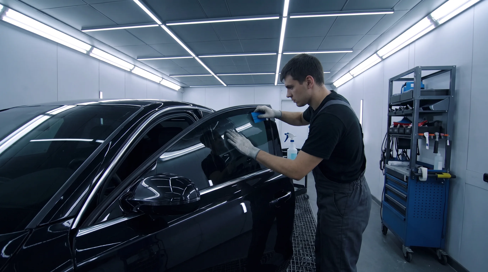

Professional ceramic, hybrid and carbon window tint installation brought directly to your home, workplace or dealership in Bowmanville, Ontario.

Pro Mobile Tint provides professional mobile window tinting throughout Bowmanville and the surrounding Clarington area.
Instead of driving to a tint shop and waiting for your vehicle, our mobile service comes directly to your home, workplace or dealership.
We install premium ceramic, hybrid and carbon window films designed to improve vehicle appearance, privacy, comfort and protection.
Whether you drive a sedan, SUV, truck, luxury vehicle or Tesla, our goal is a clean, professional installation with attention to detail.
Book Your TintOUR SERVICES
Choose the window tint solution that fits your vehicle, appearance and performance needs.
Premium ceramic window film designed for excellent heat rejection, UV protection and driving comfort while maintaining a clean appearance.
Learn MoreDurable carbon window film offering a dark, sophisticated appearance with privacy and everyday performance.
Learn MoreProfessional window tint installation at your location in Bowmanville. No need to drive across Durham Region to a shop.
Book Mobile ServiceQuality window film helps reduce solar heat and provides UV protection while improving the overall comfort of your vehicle.
Get Free QuoteProfessional installation, premium films and the convenience of having the service come to you.
Have your window tint installed at your home, workplace or another convenient location.
Premium window film can help reduce solar heat entering the vehicle and make driving more comfortable.
Choose a tint shade that gives your vehicle the appearance and privacy you want.
NEAR BOWMANVILLE
Our mobile service also serves surrounding communities throughout Durham Region.
BOWMANVILLE WINDOW TINT FAQ
Yes. Pro Mobile Tint provides mobile automotive window tint installation in Bowmanville and surrounding Clarington communities.
We offer premium ceramic, hybrid and carbon window tint options for automotive applications.
Our mobile service can come to your home, workplace or dealership, subject to suitable installation conditions.
Contact Pro Mobile Tint for a free quote and provide your vehicle information and the tint service you are interested in.
Book professional mobile window tinting in Bowmanville and have premium ceramic or carbon film installed at your location.